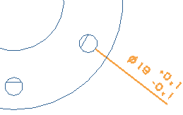
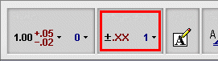
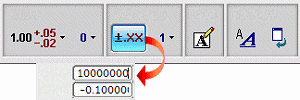

添加双向公差到孔尺寸中
-
双击尺寸，然后右击它并选择样式。
-
确保显示的是尺寸选项卡。
-
在公差类型列表中，选择双向公差。
-
将公差精度选项更改为1(公差 - x.x)。

保留公差值的其余设置为默认值。 -
点击确定。
这个公差类型的值显示在尺寸上。

注意到编辑尺寸对话框条已经展开，包含两个新的公差设置选项。

当前的公差类型反映了您在尺寸标注样式对话框中设置的选项。

精度值同样反映了您在尺寸标注样式对话框中选择的精度。

点击公差值会打开一个屏显输入框，让您更改尺寸的公差值。

您也可以直接选择尺寸中的公差值来打开屏显输入框。
必须对这些孔使用较紧的公差。

如果将光标移动到高亮显示尺寸的公差部分，然后右击，会得到一个将公差选项粗体显示的快捷菜单。
光标在尺寸上时，样式选项将会粗体显示
这表示您可以双击尺寸的公差部分来显示您要的公差编辑对象，但是，尺寸必须未被选定。
-
点击鼠标中键以取消选择高亮显示的尺寸。